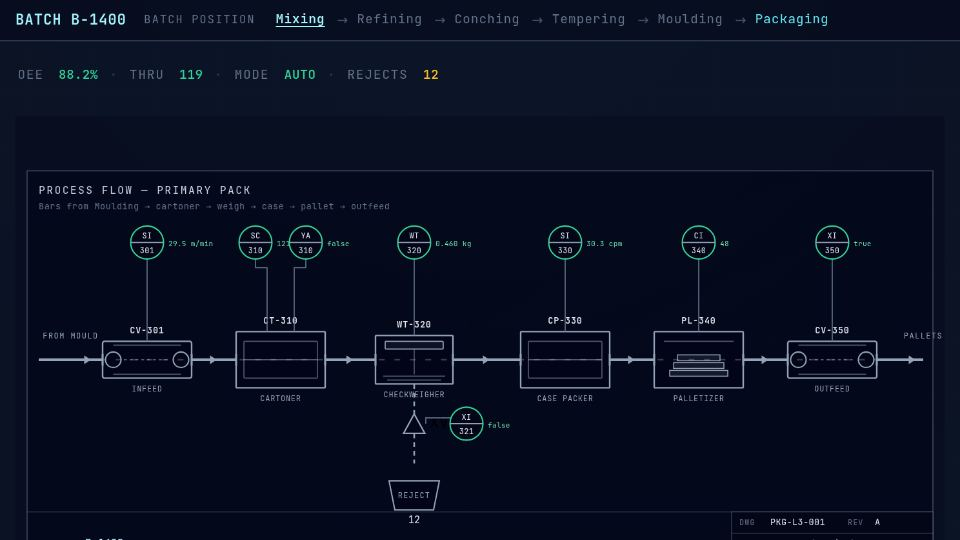

Digital backbone for factories
Making the factory
floor legible.
I’m Sam Donche. I help manufacturers connect their machines, unify the data they produce, and turn it into decisions the floor can act on.
Ignition · Unified Namespace · Cloud-native
-
Mixing/
- Mixer1/MassTempC45.1°CGOOD
- Mixer1/AgitatorRpm62rpmGOOD
-
Conching/
- Conche1/TempC58.2°CGOOD
- Conche1/TimeMin684minGOOD
-
Tempering/
- Temper1/MassTempC31.4°CGOOD
- Temper1/Zone2TempC27.0°CGOOD
- ChilledWater/SupplyTempC8.4°CGOOD
-
Moulding/
- Moulder1/MouldTempC27.9°CGOOD
- Moulder1/CyclesPerMin14cpmGOOD
-
Packaging/
- Line3/OEE88.3%GOOD
- Line3/Throughput118cpmGOOD
- Line3/Checkweigher/Reject/Count12GOOD
// About
From the lab bench to the plant floor.
I started in biomedical research: four years of doctoral work at UZ Gent on PET-guided radiotherapy and imaging biomarkers, six peer-reviewed publications, and the kind of data analysis discipline that only comes from staring at noisy signals for a long time.
I moved to industry in 2022, first as a data engineer at Clarebout Potatoes, then as MES project engineer at Vandemoortele. Same instinct, different context: capture what the process is actually doing, structure it so people trust it, and feed it back to the operators and engineers who make decisions on the floor.
Now I do that work as an Industry 4.0 Consultant at Mustry Solutions, designing scalable industrial digital architectures across manufacturing, aerospace, textiles and energy. If you’d like to work with me, that’s where the engagement runs through.
// Timeline
Trajectory
-
Industry 4.0 Consultant
May 2026 — PresentMustry Solutions · Flanders, Belgium
- Design and implement scalable industrial digital architectures that connect production assets and turn operational data into business insight.
- Work across manufacturing, aerospace, textiles and energy clients using Ignition, TimescaleDB, Factry and Grafana.
Industry 4.0IgnitionTimescaleDBGrafana -
MES Project Engineer
Sep 2025 — Apr 2026Vandemoortele · Izegem, Belgium
- Operated and extended a GE Vernova Proficy MES estate (Plant Applications, iFIX, Cimplicity, Proficy Historian and Operations Hub), rolling established workflows out to new sites and connecting new floor equipment like checkweighers and scales.
- Built and extended the logic behind those workflows in MS SQL Server, and kept it all running for the plants that rely on it through a steady stream of support tickets.
- Started bringing more structure to the work, introducing project management and application monitoring.
MESGE ProficyiFIXCimplicityMS SQL ServerTrendMiner -
Data Engineer
Jan 2022 — Sep 2025Clarebout Potatoes NV · Komen-Waasten, Belgium
- Helped build the industrial data backbone from the ground up, moving scattered spreadsheets and siloed databases into a unified namespace on Ignition, published over MQTT into a historian and a data lake.
- Built SCADA-style visualisations of the production lines and custom plant-floor applications for weighbridges, checkweighers and other equipment, with heavier logic factored into microservices.
- Was closely involved in the Kubernetes platform it all ran on, and in rolling it out across the group’s production sites so reporting, analysis and AI projects had one structured foundation to build on.
IgnitionMQTTUnified NamespaceSCADAMicroservicesKubernetesPython -
Environment & Noise Consultant
Apr 2021 — Jan 2022United Experts · Ieper, Belgium
- Consulted on environmental compliance across Flanders.
- Translated regulatory frameworks into permit files and advice.
EnvironmentPermitsCompliance -
PhD Student / Assistant Academic Staff
Nov 2017 — Apr 2021Ghent University Hospital (UZ Gent) · Ghent, Belgium
- Research on PET-guided radiotherapy and imaging biomarkers in glioblastoma models: radiosynthesis, preclinical evaluation and quantitative image analysis.
- Author on six peer-reviewed publications ↗ spanning Raman spectroscopy, PET tracer development and PET-guided therapy.
ImagingPET / MRIQuantitative AnalysisResearch -
Ghent University
2011 — 2016Bio-Science Engineering · Ghent, Belgium
- M.Sc. Bio-Science Engineering (2014–2016). Quantitative life sciences and engineering, the analytical foundation behind everything I do with industrial data today.
- B.Sc. Bio-Science Engineering (2011–2014). Specialisation in Cell & Gene Technology.
Professional development: Google Cloud Data Engineering · Python for Data
Bio-Science Eng.Cell & Gene Tech
// Skills
Toolbelt
Tools on the diagram — hover to locate, click for a one-liner.
Industry 4.0 / IIoT
Data & Backend
Cloud & Infrastructure
// Selected Work
Case studies
all case studies ↗From data islands to a factory-wide backbone
Case study ↗A large European food producer · Data engineering
From scattered spreadsheets and data islands to a unified data backbone across five production sites, built on Ignition, MQTT and a unified namespace.

Chocolate plant HMI · Heuvelland
Demo ↗Simulated chocolate-bar plant · Mixing → Packaging
A pokeable HMI for a fake chocolate plant: Mixing through Packaging in process order — tag browser, P&IDs, OPC qualities, and operator scenarios.
// Contact
Open a channel.
Got a project at the edge of OT and IT? A pilot you’d like a second pair of eyes on? Drop a message. I read everything. Client engagements run through Mustry Solutions.
Prefer email? reveal email address